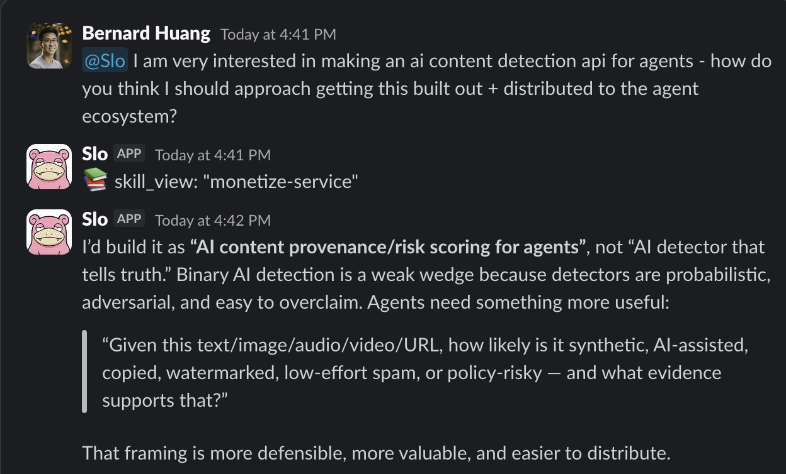
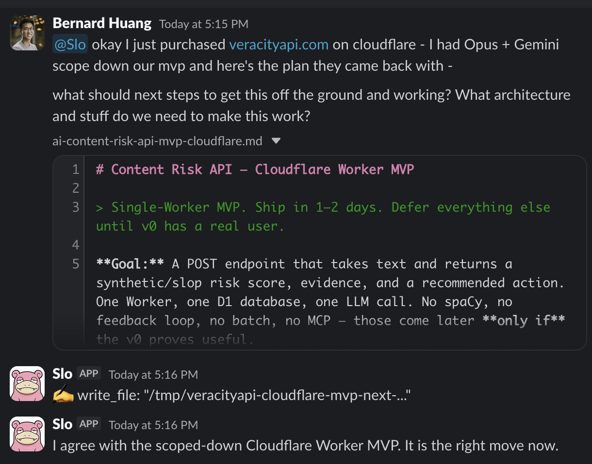

Build for Agents, Price Per Call.

Hermes + Codex 5.5 matched Opus-era smoothness. We used it — with multi-model planning across Gemini 3.1 Pro, Opus, and Codex 5.5 — to one-shot a new product (veracityapi.com) in an afternoon. But the tooling unlock isn’t the moat.
- Anyone with the same stack can build the same product tomorrow
- What decides survival is whether your product is structurally durable as agents become the dominant consumer of every API on the internet
- Veracity is built against four tests: durable-as-agents-take-over, durable-as-agents-improve, agent-first surface, metered with free tier
Build for agents. Price per call. Everything else is legacy.
The build that surprised us
After Anthropic banned Opus from our setup, we’d switched our main OpenClaw rotation to Z.AI’s GLM 5.1 as the best replacement we could find. Codex 5.4 had been rough — missed instructions, slow, expensive at the same throughput. Last week we wired up a parallel agent on Hermes + Codex 5.5, mostly out of curiosity to see if the latest OpenAI iteration had closed the gap.
It had. The Hermes + Codex 5.5 agent runs as smoothly as OpenClaw + Opus did pre-ban — same rough capability, same low rate of needing a human to step in mid-task. Subjectively the gap with the Opus-era setup is gone.
To stress-test it, we used both stacks in parallel to scope a new product idea, bouncing between three model perspectives — Gemini 3.1 Pro for breadth, Opus (still accessible directly via API for non-agentic calls) for sharpness, Codex 5.5 for the actual code. Slo, the agent inside our Hermes setup, caught a strategic problem on the very first message:

The original idea was “AI content detection API for agents.” Slo pushed back: detection is structurally weak because detectors are probabilistic, adversarial, and easy to overclaim. Better framing: provenance and risk scoring, with evidence. Same inputs (text/image/audio/video/URL), different output shape — instead of binary “is this AI? yes/no,” the question becomes “how likely is this synthetic, AI-assisted, copied, watermarked, low-effort spam, or policy-risky — and what evidence supports each score?”
That reframe became the product. By the next message, we’d scoped the Cloudflare Worker MVP:

One Cloudflare Worker. One D1 database. One LLM call. A POST endpoint that takes text and returns a structured risk score with evidence and a recommended action (allow / revise / human-review / reject). Everything else — spaCy, batch processing, MCP server, feedback loops — deferred to only if pieces become useful.
We shipped it. veracityapi.com is live. Pay-per-request: $0.01 for ≤4K chars up to $0.12 for ≤100K. No subscription tier. llms.txt and agents.json published for machine discovery. Structured JSON responses. Build took an afternoon.
But tooling isn’t the moat
Here’s the uncomfortable part: anyone with Hermes + Codex 5.5, or OpenClaw + GLM, or Claude Code + Opus, or any of the 21-model rotation we run elsewhere, can build the same product tomorrow. The model layer democratized the build, not the business.
What decides survival isn’t the speed at which you ship. It’s whether your product is structurally durable when AI agents — not humans — become the dominant consumer of every API on the internet. If you’re shipping a product right now built around a human UI, per-seat pricing, monthly subscriptions, and a “request a demo” sales funnel, you have 12–18 months before it gets cannibalized. Not by competitors. By the agent economy itself, which doesn’t have eyes, doesn’t have credit cards, doesn’t have legal entities, and doesn’t book demos.
We built Veracity against four tests.
The 4 tests for the agent economy
1. Does it stay valuable as agents become the dominant consumer?
The shape of demand for software is shifting from “human opens browser, clicks button” to “agent makes API call.” If your product requires the first pattern, you have a customer base that’s shrinking. Veracity is invoked by an agent before it publishes, trains on, or moderates a piece of content. The customer is literally an agent. As agent-driven workflows replace human-driven ones, demand goes up.
Concrete test: can your product be used end-to-end without a human ever seeing the UI? If yes, durable. If no, brittle.
2. Does it stay valuable as agents get smarter?
The wrong answer here is “my product makes agents smarter, so it’s obsolete when they get smarter on their own.” The right answer: my product handles something agents structurally can’t do alone, and gets more valuable as agent volume grows. Veracity scores content for synthetic / slop / policy risk. As more content is AI-generated, the need for pre-action vetting grows. As agents take more autonomous actions, the cost of acting on bad content grows. Both vectors compound.
Concrete test: graph “agent capability” on the x-axis vs “your product demand” on the y-axis. Is the slope positive? If yes, durable.
3. Is the surface agent-first?
Agent-first means: no human UI is required for the product to function. The dashboard, marketing site, and docs are for humans to discover the product. The production usage never touches a screen. The agent finds the endpoint via llms.txt, reads the OpenAPI spec, calls the API, parses the JSON. This is the same shift the headless software argument predicted — just zoomed in on a single product line.
Concrete test: can a Claude or Codex agent discover, integrate, and use your product without any human-mediated step? If yes, agent-first. If no, you’re a SaaS pretending to be an API.
4. Is pricing metered with a free tier?
Agents can’t buy seats. They can’t fill out billing forms with company names. They can’t sign annual contracts. They can spend $0.01 on a single call against an account that has a $5 budget. That’s the entire transaction shape. Veracity is $0.01–$0.12 per call with a public free tier capped at low volume. No subscriptions, no contracts. The free tier exists specifically because discovery in the agent economy looks like an autonomous Codex or Claude trying your endpoint to see if it works — before any human is in the loop to pull out a credit card.
Concrete test: can an agent successfully use your product from discovery to first paid call within 60 seconds and without ever asking a human for permission? If yes, pricing fits the agent economy.
What this rules out
By extension, this rules out a lot of what’s being shipped as “AI products” in 2026:
- Per-seat SaaS — agents don’t fill seats
- Human-UI-only products — agents can’t use them
- Annual contracts with credit checks — agents can’t sign them
- “Talk to sales” pricing pages — agents can’t talk to humans
- AI features bolted onto a human SaaS — the human SaaS is the dying part
- Free trials behind credit-card walls — agents don’t have credit cards
- 14-day onboarding flows — agents have 14 seconds
If you’re building any of those right now, you’re building for a customer base that’s contracting. Same structural argument as the training-data piece: the surface that the AI layer can commoditize is the surface that won’t earn revenue. The tools that survive will be the ones a Codex 5.5 or Opus 6 can integrate with by themselves, on its own initiative, with its own budget.
The thesis
The Hermes + Codex 5.5 build was a fun proof that the tooling layer has caught up. The model is no longer the constraint on what you can ship. What you build with it is.
Build for agents. Price per call. Everything else is legacy.